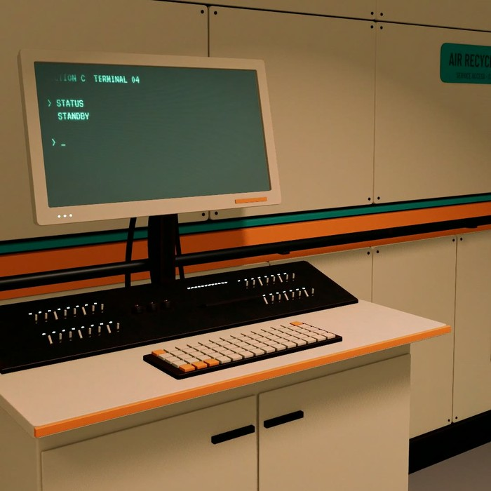
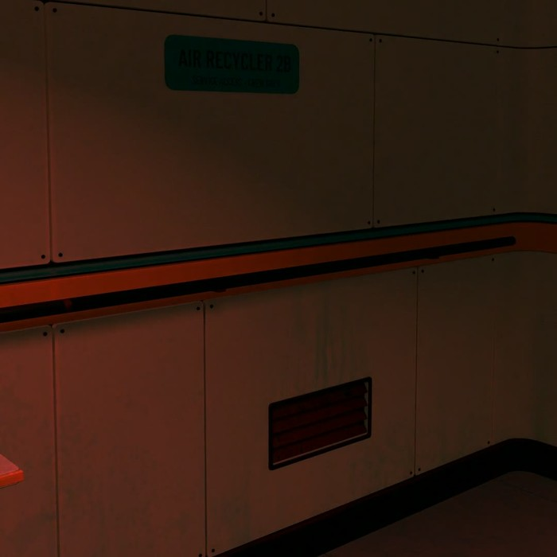
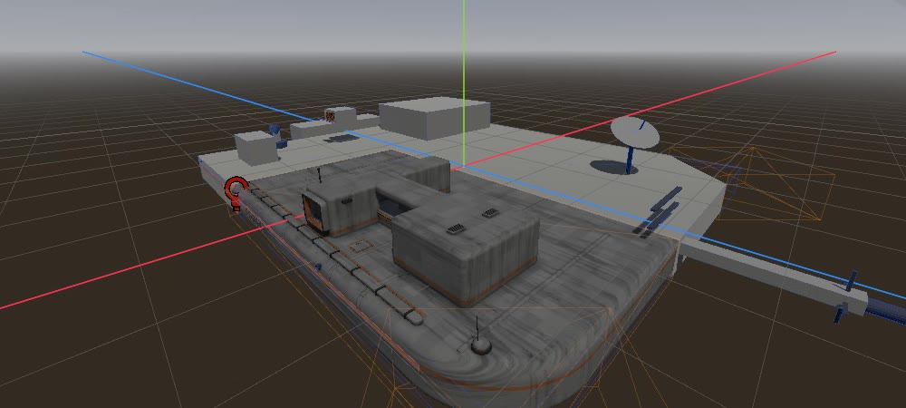
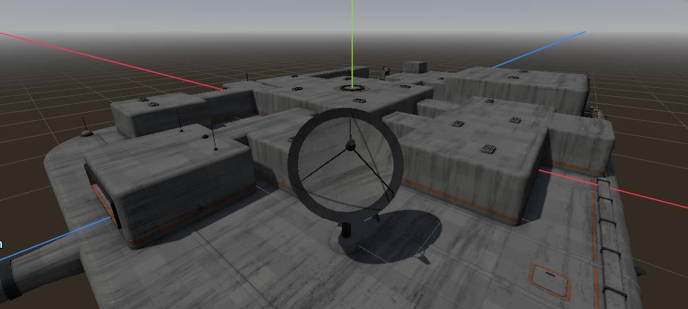
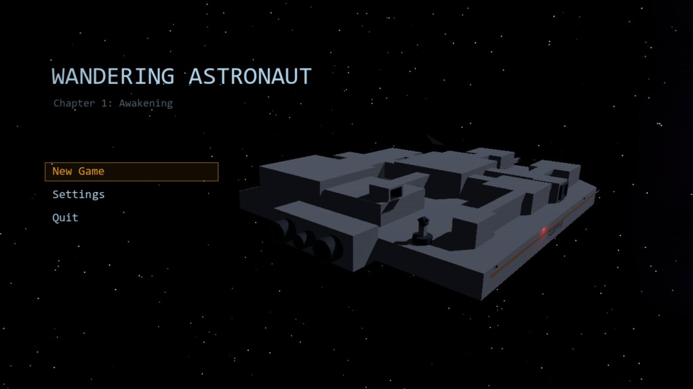
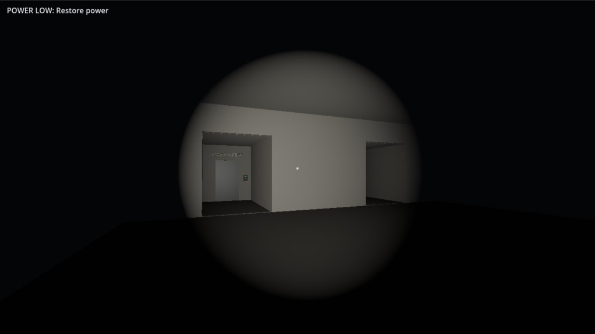
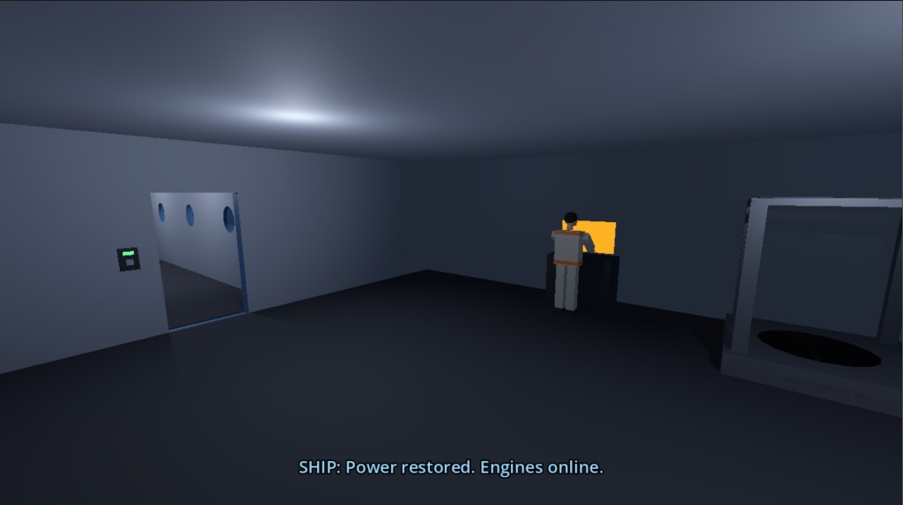
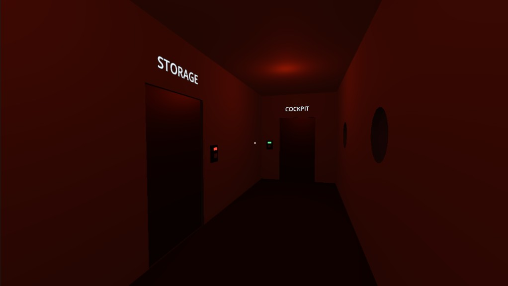

Wandering Astronaut
You wake up alone on a research ship built to be cheerful. The lights are out, and nobody is answering.
The opening
Briefing
An astronaut wakes in the medbay of FGRYYNE, a research vessel drifting through deep space, with no memory of how he got there. The crew is gone, the power is failing and the fuel is running low. To survive he has to keep the ship alive. To understand it, he has to answer one question: who were these people?


Art pass
The ship is getting its proper look. Here's the exterior before and after. Interiors are next.

Before After
After
From the ship




Screenshots: alpha build, before the art pass
Systems
- SYS-01A mystery told by the shipUncover what happened through logs, objects and empty rooms.ONLINE
- SYS-02Tractor-beam miningPull in asteroids to keep the ship fuelled and moving.ONLINE
- SYS-03Ship hazardsSurvive failures like a hull breach in total darkness.ONLINE
- SYS-04Dread, not jump scaresSlow, suspenseful exploration: horror built on contrast.ONLINE
- SYS-05Fully voicedEvery voice, from the astronaut to the ship's computer, performed by the developer.ONLINE
Mission log
Chapter 1 playable end to end, after two alpha test rounds. Testers' first read: "like Project Hail Mary".
Demoed at IGDC 2026, Chennai.
Art pass underway: exterior done, interiors next.
Steam store page for the full game (PC), and Chapter 1: Awakening free on itch.io.
Nobody is answering. Yet.
Built solo in Godot by Aadesh Malani · QM Studios, India